부록 A의 학습 안내
Appendix A — Overview · ICS의 10개 탭을 학습하는 독립형 노트
Appendix A는 사고지휘체계(Incident Command System, ICS)의 현장 운용을 설명하는 부록입니다. 지휘조직·전술·계획·지원·재무·정보조사·다중 사고·사고대응계획·서식·직책별 업무의 10개 탭으로 구성됩니다.
| 탭 | 주제 | 학습 초점 |
|---|---|---|
1 | ICS 조직 | 지휘·일반참모 직책, 모듈형 확대 |
2 | 작전부 | 전술운영, Branch·Division·Group, 자원편성 |
3 | 계획부 | 자원·상황·기록·철수 계획 |
4 | 지원부 | 보급·시설·수송·통신·급식·의료 |
5 | 재무·행정부 | 비용·계약·시간·보상 |
6 | 정보·조사 | 사고별 기능 배치 선택지 |
7 | 복수 사고 | Incident Complex와 Area Command |
8 | 사고대응계획 | Planning “P”와 IAP 주기 |
9 | ICS 서식 | 표준서식과 사고대응계획 첨부 |
10 | 직책별 기능 | 지휘·참모 직위별 책임 표 |
ICS 적용의 기본 순서 (원문 p.79)
- 필요한 지휘체계의 설치 및 지휘권 이양
- 사고에 필요한 조직요소만 활성화하고 적절히 권한 위임
- 현장시설을 설치하고 직위·자원·시설에 공통 용어 적용
- 사고 목표를 정하고 IAP 수립절차 진행, 필요 시 구두계획에서 서면계획으로 전환
FEMA (2017), National Incident Management System, Appendix A, 인쇄 pp.79–115에 근거합니다. 원문 p.79는 부록의 설명과 사례가 ICS 정식 교육을 대신하지 않는다고 명시합니다.
Appendix A에 있는 원본 Figure A-1~A-12 및 Table A-1~A-3은 영문 원형 그대로 삽입했습니다. Figure/표 이미지를 누르면 확대하여 볼 수 있습니다.
ICS 조직과 지휘참모
ICS Tab 1 — ICS Organization · 모듈형 확대, 직책명, 공보·안전·연락 기능
① 5개 주요 기능과 모듈형 운영
- 지휘(Command), 작전(Operations), 계획(Planning), 지원(Logistics), 재무·행정(Finance/Administration)으로 구성
- 사고 규모·범위·복잡성에 맞추어 필요한 직책만 활성화
- 상위 감독자는 하위 직책이 배치되기 전 해당 기능의 책임을 담당
- 감독 가능한 통할범위(span of control)를 유지하고 불필요한 조직은 해제
- Deputy는 상급자를 대행할 자격이 필요하며, Assistant는 직무상 지원역할로서 대행 자격이 반드시 동일하지 않음
② Table A-1: 직위명 구조
| ICS 조직요소 | 책임 직위명 | 핵심 구분 |
|---|---|---|
사고지휘 | Incident Commander | 지휘관 |
지휘참모 | Officer | 공보·안전·연락 담당관 |
부(Section) | Chief | 부서장 |
지부(Branch) | Director | 지부장 |
구역·기능 그룹 | Supervisor | 감독자 |
단위(Unit) | Unit Leader | 단위 책임자 |
타격팀·기동대 | Leader | 팀장 |
단일 자원 | Boss / Leader | 개별 자원 지휘 |
기술전문가 | Specialist | 전문 자문 |
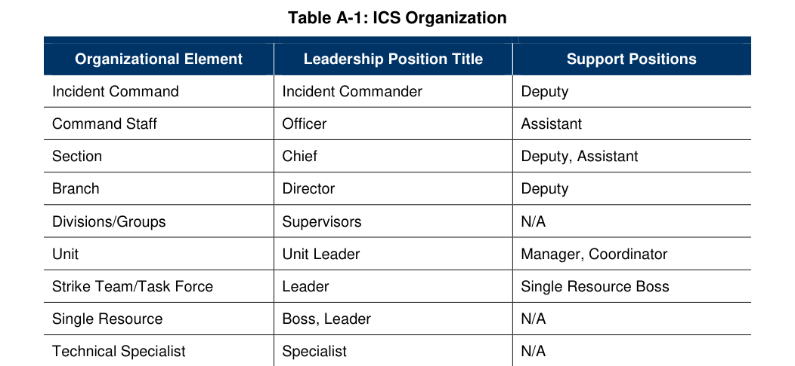
③ Command Staff의 주요 책임
| 직책 | 주요 책임 | 유의점 |
|---|---|---|
공보관 PIO | 정보 수집·검증·조정·전파, 언론과 대중 소통 | 외부 정보 공개 승인: IC 또는 UC |
안전담당관 Safety Officer | 현장 위험 평가, 사고 안전계획, 즉각적 위험행위 중단·변경 | 참여 기관별 자체 안전책임은 존속 |
연락관 Liaison Officer | 지원·협조기관 및 NGO·민간 대표와 지휘부 연결 | 연락창구 참여가 공동 지휘권 부여는 아님 |
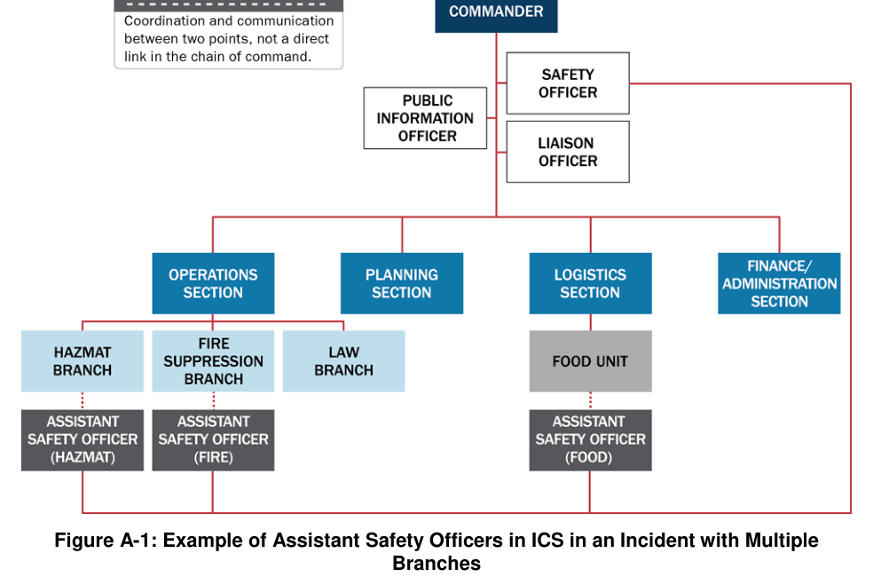
원문은 단일 IC·UC에서도 Safety Officer를 하나 지정하는 원칙과, 위험행위를 변경·중단·종료할 권한을 기술합니다. 사고별 추가 자문가는 지휘권이 없는 자문역일 수 있습니다.
작전부와 현장 자원 편성
ICS Tab 2 — The Operations Section · 지부·구역·기능그룹, 단일자원·기동대·타격팀, 항공작전
① 작전부(Operations)의 역할
- 사고 목표 달성을 위한 전술 활동의 계획·실행과 현장 자원관리
- 작전부서장은 필요 시 지부를 설치하여 통할범위를 관리
- 지리적 배치인 Division과 업무별 배치인 Group은 서로 다른 조직 기준
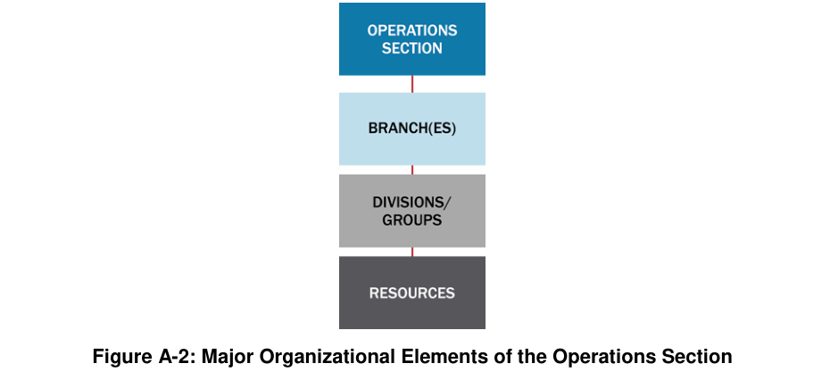
② 지부·구역·그룹의 차이
| 개념 | 구성기준 | 예시 및 운영 |
|---|---|---|
Branch (지부) | 넓은 지역 또는 대규모 기능을 묶음 | 복수의 Division·Group 관리, 지리적 지부 또는 기능 지부 |
Division (구역) | 지리적 영역 | 도로·하천·건물 층·관할구역 등 지리적 경계 |
Group (그룹) | 기능별 임무 | 구조·대피·의료·교통관리 등 업무 분야 |
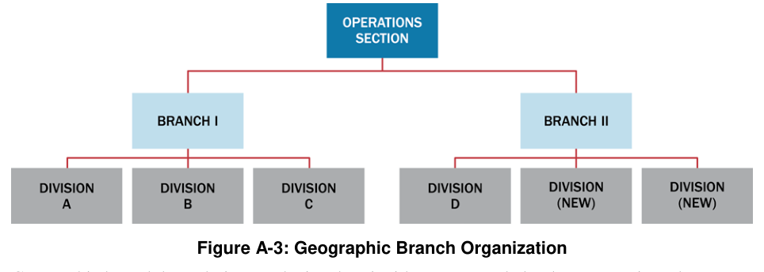
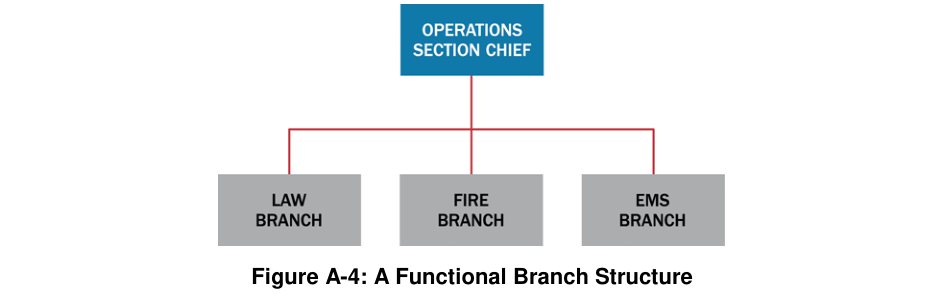
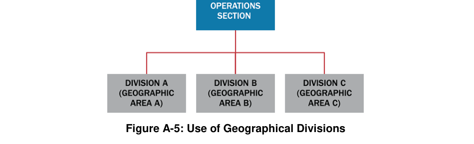
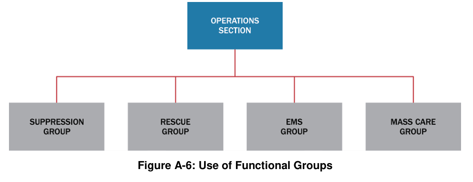
③ 자원 편성 유형
| 유형 | 자원 구성 | 원문 사례 |
|---|---|---|
Single Resource | 단일 인력·장비 또는 장비와 운영자 | 개별 인력, 한 대의 장비 |
Task Force | 서로 다른 종류·유형의 자원을 임무에 맞게 결합 | 배수로 개방을 위한 트럭·굴착기·작업반 |
Strike Team | 같은 종류·유형의 일정 수 자원을 묶음 | 같은 Type 3 덤프트럭 5대 + 지휘자 |
④ 항공작전 지부
- 항공기 운용이 복잡해지면 Air Operations Branch 설치 가능
- 항공 전술 그룹과 항공 지원 그룹의 업무 구분
- 헬기·고정익 항공기 동시 운영 시 항공활동 조정과 자원안전 확보
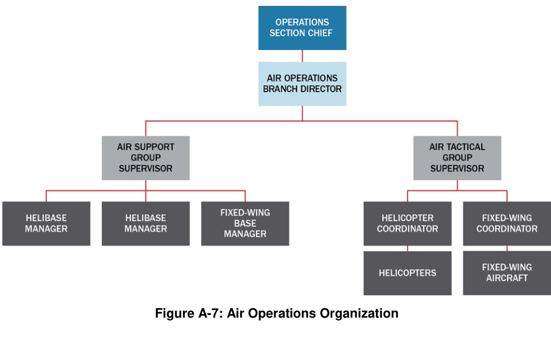
계획부: 상황·자원·기록·철수
ICS Tab 3 — The Planning Section · 사고상황을 분석하고 다음 작전기간의 IAP를 준비
계획부는 사고의 현재·예상 상황과 자원현황을 관리하고 사고대응계획(IAP)을 작성합니다.
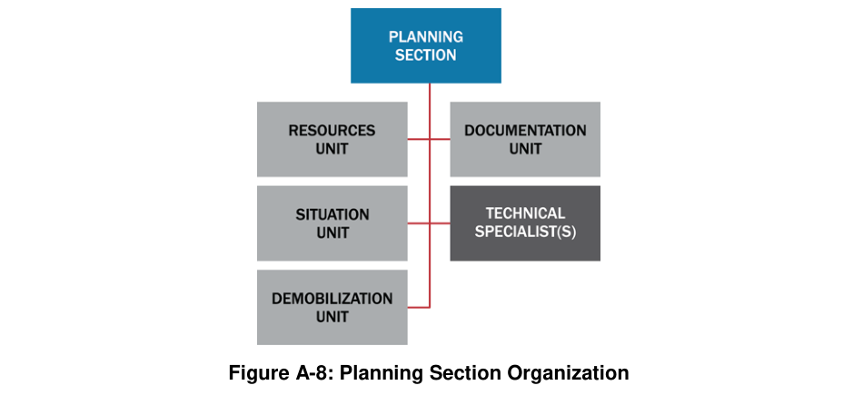
| 단위 | 원문 책임 | 실무상 구분 |
|---|---|---|
Resources Unit (자원단위) | 현장 배치자원의 위치·상태 기록, 체크인 확인 | Assigned · Available · Out of Service 상태 구분 |
Situation Unit (상황단위) | 상황정보 수집·가공·분석, 상황보고(SITREP), 지도·예측 생산 | GIS·현장관찰자 포함 가능 |
Documentation Unit (기록단위) | 사고 문서·IAP 편집·배포·보관 | 법적·분석적·역사적 활용 |
Demobilization Unit (철수·복귀 단위) | 철수계획 작성·배포, 자원 복귀 조정 | 사고 초기에 철수계획 준비 시작 |
Technical Specialists | 분야별 전문 분석 및 지원 | 기상·감염병·환경·법률·수의학 등 |
현장에 이미 배치된 자원의 상태는 계획부의 Resources Unit에서 추적하며, 요청했으나 아직 현장에 도착하지 않은 자원은 지원부에서 추적합니다(원문 p.92).
자원 상태의 세 종류
| 상태 | 의미 |
|---|---|
Assigned | 체크인 후 특정 임무를 부여받은 상태 |
Available | 체크인 후 임무 배정을 대기하는 상태 |
Out of Service | 체크인은 했지만 장비고장·휴식·인력 사유 등으로 배치 불가 |
지원부: 현장 지원과 인력 보호
ICS Tab 4 — The Logistics Section · 보급·시설·수송·통신·식사·의료의 운영지원
지원부(Logistics)는 현장 대응을 위해 필요한 물자·시설·수송·통신·식사·의료서비스를 제공합니다. 원문은 사고 규모에 따라 Service Branch와 Support Branch를 둘 수 있다고 설명합니다.
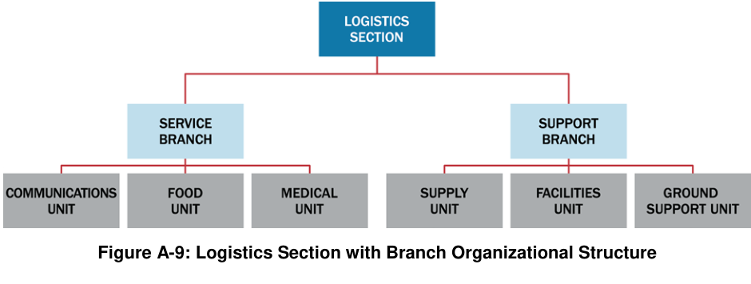
| 단위 | 주요 업무 |
|---|---|
Supply Unit | 요청·조달·수령·보관·재고·배포, 현장 밖 자원주문 |
Facilities Unit | ICP·사고기지·캠프 설치·유지·해제, 작업자 숙소·위생·안전 |
Ground Support Unit | 육상 수송, 차량 정비·연료, 이동계획과 운행기록 |
Communications Unit | 현장 통신센터, 통신계획, 무전 주파수·음성·데이터 네트워크 |
Food Unit | 현장 대응인력의 식사·수분·식품안전 |
Medical Unit | 현장 대응인력의 의료·정신건강·직업보건 지원 |
원문 p.95~96은 재난피해자·대피소 주민에게 제공하는 급식·응급보호는 Operations의 전술활동이라고 분명히 구분합니다. Logistics Food/Medical Unit의 주 대상은 현장 대응인력입니다.
재무·행정과 비용 책임
ICS Tab 5 — Finance/Administration Section · 비용분석·보상청구·계약·근무시간 기록
재무·행정부는 현장 사고별 비용·계약·보상·근무시간 기록을 관리하며, 사고의 특성상 필요할 때 설치합니다.
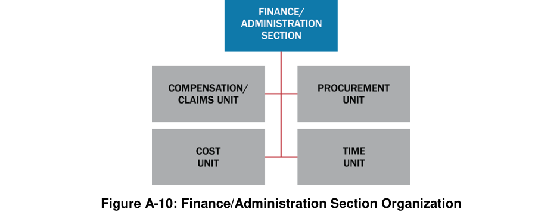
| 단위 | 핵심 업무 |
|---|---|
Compensation and Claims Unit | 인력 상해 보상 및 재산손해 청구 관련 관리 |
Cost Unit | 사고비용 기록·분석·예측과 절감방안 제시 |
Procurement Unit | 물품·서비스 구매, 계약·임차 처리 |
Time Unit | 인력 및 임차장비의 작업시간 기록·검증 |
- 여러 출처의 재원이 투입되는 대형사고에서 지출·청구·계약을 통합적으로 추적
- 계획부·지원부의 활동기록과 비용서류를 대조해 차이를 점검
- 현장 대응 경과에 따라 추가 재정 수요를 전망
작전부가 현장의 전술을 실행하고, 지원부가 물자·서비스를 제공하며, 재무·행정부가 시간·계약·보상·비용을 관리합니다.
정보·조사 기능의 배치
ICS Tab 6 — Intelligence/Investigations · 정보수집·원인조사 기능은 사고 특성에 따라 조직 내 위치가 달라짐
정보·조사 기능은 사고 원인 파악, 위험정보 분석, 증거·시료 관리, 수사와 대응 간 연계 등에 사용됩니다. 사고지휘관(IC) 또는 통합지휘부(UC)가 필요에 따라 배치 위치를 정합니다.
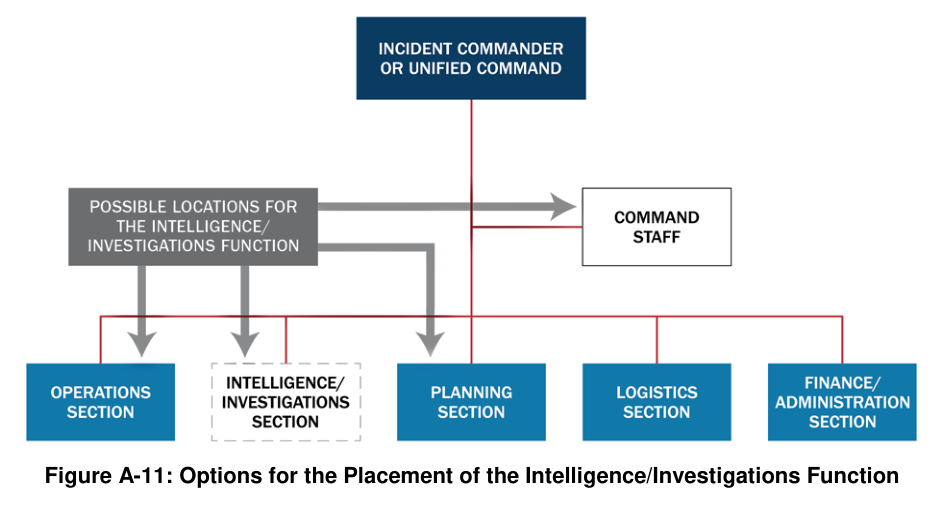
| 배치 위치 | 활용 목적과 조건 |
|---|---|
Planning Section | 상황정보·분석·예측에 정보·조사 자료를 통합 |
Operations Section | 수사·정보활동이 주요 전술작전으로 수행될 때 작전과 통합 |
Command Staff | 현장의 직접 조사작전보다 지휘관의 전문 자문이 중요한 경우 |
독립 General Staff Section | 규모가 크고 별도 관리가 필요한 수사·정보기능 수행 |
- 정보·조사 기능의 배치는 일률적 고정 방식이 아님
- 독립 부서 구성 시 계획·작전·지원부와 책임이 중복되지 않도록 조정
- 범죄·테러·감염병 역학조사 등 사고의 특성에 따라 요구가 달라짐
정보·조사 기능은 항상 일반적인 재난원인조사만 뜻하지 않습니다. NIMS 부록은 정보수집·작전지원·수사·역학조사·증거보존 등 여러 기능을 함께 설명합니다.
복수 사고의 통합관리
ICS Tab 7 — Consolidating Multiple Incidents · 사고복합체와 광역지휘부의 운영 원칙 비교
| 구분 | Incident Complex (사고복합체) | Area Command (광역지휘부) |
|---|---|---|
적용 상황 | 한 지역의 인접한 여러 사고를 하나의 ICS로 관리 | 복수 사고 또는 매우 복잡한 사고에 여러 ICS가 운영 |
지휘구조 | 하나의 IC 또는 UC; 개별 사고가 지부·구역으로 전환 | 각 ICS는 유지하고 상위에서 여러 IC·UC를 감독 |
주요 목적 | 현장관리 및 지원기능의 통합 | 광역 목표·전략 조정, 부족자원의 우선순위·배분 |
전술활동 | 통합 ICS 내 작전부에서 수행 | 각 개별 ICS에서 수행 |
광역지휘부의 추가 책임
- 넓은 지역의 주요 목표를 설정하고 개별 사고 간 목표 충돌을 방지
- 부족한 인력·장비·자원의 배분·재배분을 조정
- 각 현장의 사고지휘관이 적절하게 사고를 관리하는지 감독
- EOC·MAC Group·기관 관리자와 중요 자원수요를 협의
- 지휘부는 개별 현장지휘소(ICP)와 혼동되지 않도록 별도 장소에 설치 권고
Area Command는 EOC와 동일한 조직이 아니며, 현장 전술을 직접 지휘하는 Operations Section을 대신하는 기능도 아닙니다. 원문 p.102–104 참조.
사고대응계획(IAP)과 Planning “P”
ICS Tab 8 — Incident Action Planning · 초기 대응에서 작전기간별 반복계획까지
IAP(사고대응계획)는 각 작전기간(operational period)의 목표·전술·자원·임무·안전정보를 전달합니다. 원문은 계획수립을 ‘서식 작성’ 이상의 사고관리의 반복적 리듬으로 설명합니다.
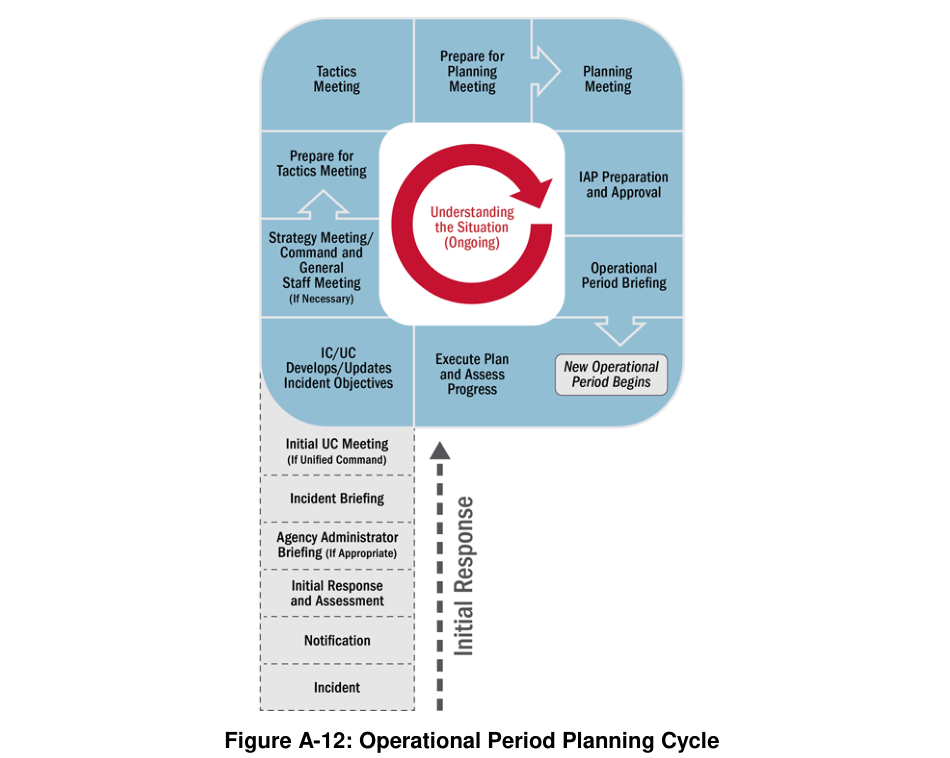
| 구간 | 중요 활동 | 읽는 방식 |
|---|---|---|
P의 아랫부분 | 최초 대응·상황평가, 기관장 브리핑, 최초 사건 브리핑, 최초 통합지휘 회의 | 초기에 주로 한 번 수행 |
반복 계획 주기 | 목표 설정·갱신 → 전략·전술 논의 → 계획회의 → IAP 준비·승인 | 작전기간별 반복 |
실행 및 갱신 | 작전기간 브리핑 → 전술활동 → 상황·자원정보 갱신 | 현재 활동과 차기 계획 연결 |
IAP의 주요 회의와 담당 역할
- Initial Response and Assessment: 초기 상황 파악, 응급조치, 추가자원 필요 판단
- Agency Administrator Briefing: 위임권한·기관의 우선순위·제약 설명
- Incident Briefing: 초기 대응내용을 새 지휘부에 인계
- Initial UC Meeting: 여러 관할기관의 목표·제약·우선순위 공유
- Objectives Development: IC·UC가 측정 가능한 사고 목표 설정·수정
- Tactics Meeting / Planning Meeting: 전술·자원을 논의하고 IAP의 주요 내용을 확정
- IAP Preparation and Approval: 계획부가 취합하고 IC·UC가 최종 승인
- Operational Period Briefing: 해당 작전기간의 감독자·전술인력에게 계획 전달
P의 직선 부분은 초기 단계이고 둥근 고리는 작전기간마다 반복되는 계획·실행 주기입니다. 초기 사고에서 서면계획이 항상 필요한 것은 아니지만, 규모·복잡성이 커지면 서면 IAP의 중요성이 커집니다.
ICS 표준서식 및 IAP 첨부서류
ICS Tab 9 — ICS Forms · 기록의 목적과 IAP의 구성 문서 이해
ICS 표준서식은 현장 정보와 자원·작전·안전 관련 내용을 일관되게 기록하도록 돕습니다. 원문은 서식을 사고 특성에 맞게 사용하도록 안내하며, Appendix의 Table A-2는 IAP 구성요소와 통상 작성 주체를 제시합니다.
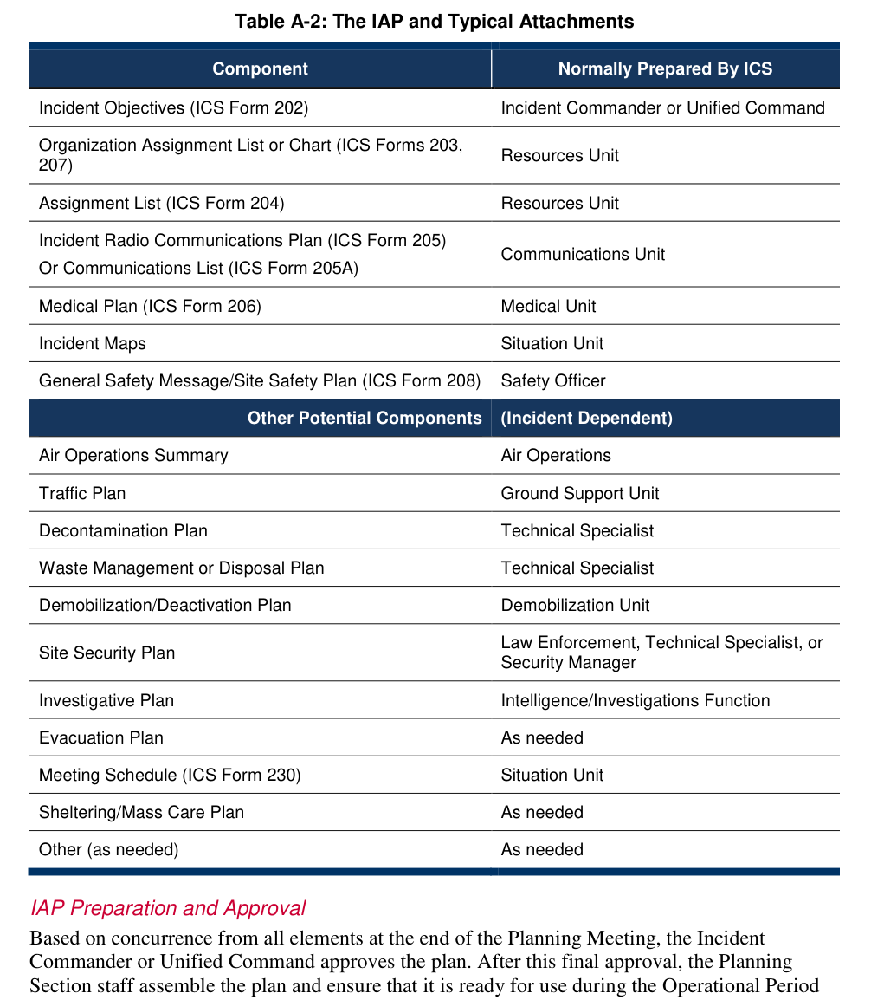
Table A-2의 핵심 요소
| 서식 또는 첨부 | 작성 주체(원문) |
|---|---|
ICS 202: 사고목표 | IC 또는 UC |
ICS 203 또는 207: 조직 편성 | Resources Unit |
ICS 204: 임무배정 | Resources Unit |
ICS 205 / 205A: 무전통신·통신목록 | Communications Unit |
ICS 206: 의료계획 | Medical Unit |
사고지도 | Situation Unit |
ICS 208: 공통 안전메시지/현장안전계획 | Safety Officer |
해당 시: 항공·교통·제염·폐기물·철수·보안·수사·대피·대피소 계획 | 각 기능 담당자 또는 필요 시 지정자 |
ICS 서식집에 관한 주요 내용
- 서식별 목적·작성주체·사용 시점이 다름
- 일부 서식은 지휘·계획·작전·지원 사이 정보를 연결
- 모든 사고에 모든 서식이 반드시 필요한 것으로 오해하지 않기
- IAP 최종 승인 주체는 IC 또는 UC; 계획부가 취합·배포
Table A-2의 원본 표는 인쇄 p.109에 있습니다. 별도로 원문의 ICS Tab 9 설명은 p.111–112에 있습니다. 이 서브노트는 관련성이 높아 같은 학습 단위로 묶었습니다.
ICS 주요 직위별 기능 요약
ICS Tab 10 — Primary Functions · 지휘관·지휘참모·일반참모의 책임 전체 표
Table A-3는 ICS 주요 직위의 역할을 한데 정리한 표입니다. 표가 3쪽에 걸쳐 이어지므로 원문 세 부분을 모두 실었습니다.
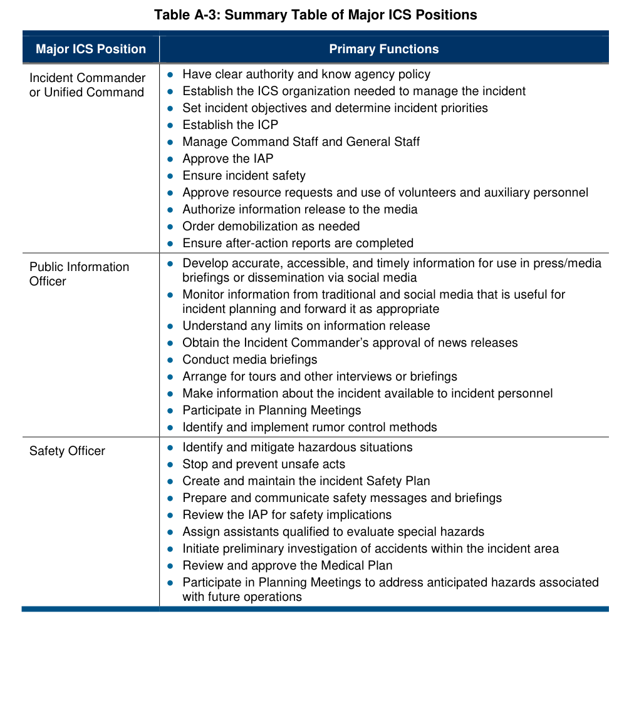
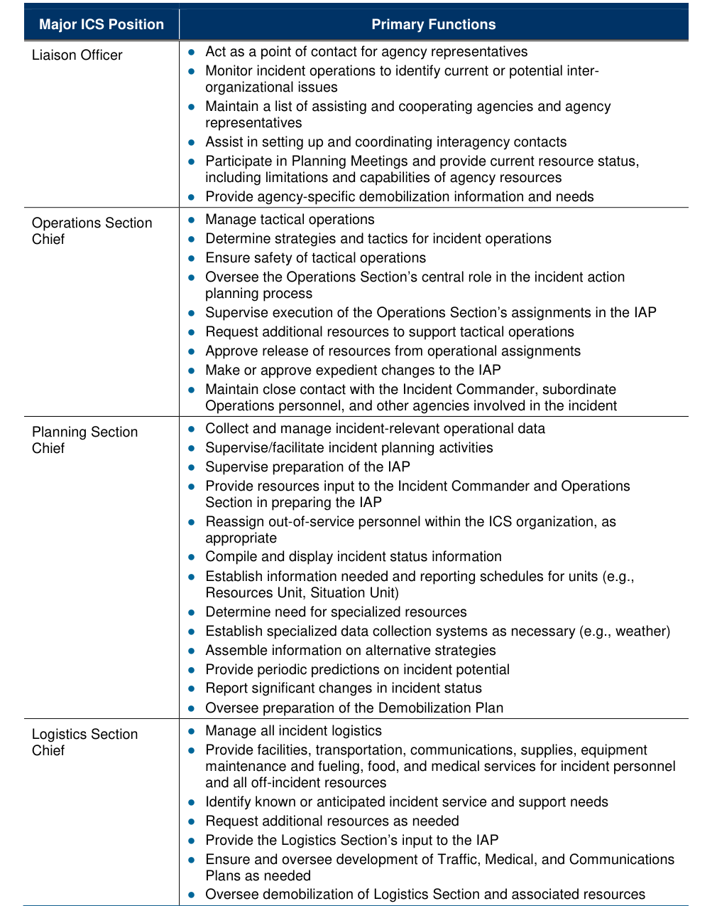
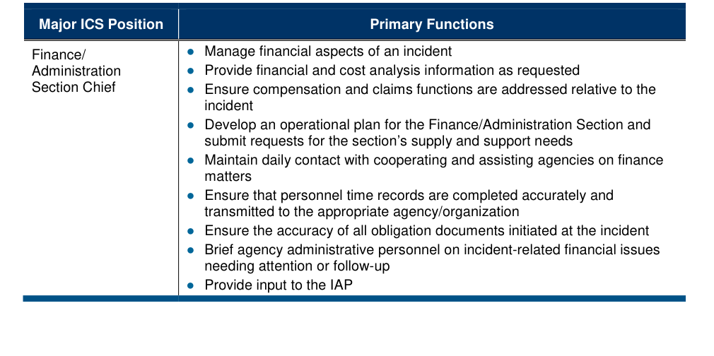
역할별 핵심 구분
| 구분 | 핵심 질문 | 최종 책임의 방향 |
|---|---|---|
Incident Commander / Unified Command | 무엇을 달성할 것인가? | 사고목표·전략·IAP 승인, 전반적 사고관리 |
PIO / Safety / Liaison | 정보·안전·협력기관은 어떻게 관리하는가? | 지휘부 직접 지원, 공보·안전·연락 기능 |
Operations Section Chief | 누가 어떤 전술을 실행하는가? | 현장 전술활동과 인력 배치 |
Planning Section Chief | 상황·자원정보를 어떻게 분석하고 계획하는가? | IAP 작성과 상황보고·문서관리 |
Logistics Section Chief | 작전 수행에 필요한 자원을 어떻게 제공하는가? | 시설·수송·보급·통신·급식·현장인력 의료 |
Finance/Administration Section Chief | 비용·계약·근무·보상은 누가 관리하는가? | 비용·재원·청구 및 시간기록 |
원표의 책임 표현을 요약표로 바꾸어 법적 권한을 추가로 부여하는 것은 피해야 합니다. 직위별 세부업무는 원본 Table A-3에서 직접 확인할 수 있습니다.
복습 문제
Quick Review · 원문을 기반으로 한 확인 문제 9개
질문을 누르면 정답과 해설이 펼쳐집니다.
01Deputy와 Assistant는 동일한가?
02Division과 Group의 분류 기준은?
03Task Force와 Strike Team의 구분은?
04현장에 도착한 자원과 아직 도착하지 않은 자원의 추적 주체가 다른가?
05지원부 Food Unit이 대피주민 급식도 담당하는가?
06정보·조사 기능은 언제나 계획부에만 속하는가?
07Area Command와 Incident Complex의 조직 구조 차이는?
08Planning “P”의 다리와 원형 부분은 각각 무엇을 뜻하는가?
09ICS 202와 ICS 204는 무엇을 기록하나?
출처·사용 안내
Sources & Use · 2017 NIMS 부록 원문과 요약자료의 구분
출처: Federal Emergency Management Agency. (2017). National Incident Management System (Third Edition), Appendix A (pp.79–115).
| 요소 | 수록 형태 |
|---|---|
본문 | Appendix A 원문의 한국어 학습용 개조식 요약 |
원문 시각자료 | Figure A-1~A-12 및 Table A-1~A-3 원형 |
페이지 | 인쇄 페이지 기준 pp.79–115 (첨부 PDF 파일 쪽수는 10쪽 뒤) |
2017년 NIMS 제3판에 대한 학습용 설명입니다. 정식 교육훈련 또는 현행 법률·개정지침을 대체하지 않으며, 새로운 국내 제도 비교나 외부 연구를 임의로 추가하지 않았습니다.